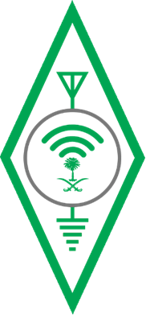
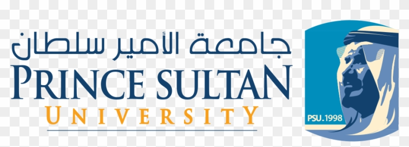
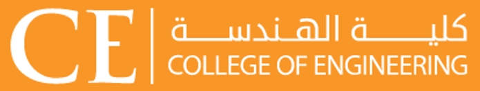
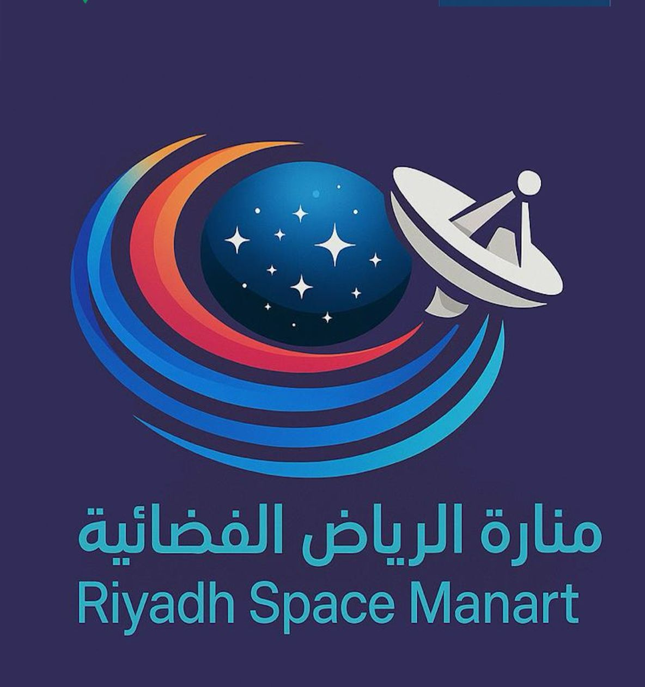

Live Monitoring of the SARI Launch
Recorded from our ground station while tracking the November 2025 launch mission and preparing to capture the first signal from the RawdahScope satellite.




A bilingual visual learning portal for SatThon participants, engineering students, and amateur radio operators exploring satellite communication, tracking, antennas, Doppler correction, TLE data, LoRa, TinyGS, and student satellite missions.
Choose a lecture language or test your understanding through the interactive challenges.
Visual-first lecture museum with technical explanations and complete slide sequence.
نسخة عربية كاملة للمشاركين مع شرح مرئي منظم ومحتوى تدريبي.
Interactive satellite communication challenge for reviewing key concepts.
اختبار تفاعلي باللغة العربية لمراجعة المفاهيم الأساسية.
Short video resources from Riyadh Space Minaret ant Prince Sultan University to support the learning experience and outreach activities.
Recorded from our ground station while tracking the November 2025 launch mission and preparing to capture the first signal from the RawdahScope satellite.
Live SDR waterfall display showing our transmitted signal pinging the satellite during early contact operations and signal testing.
This portal was prepared as a reusable educational resource for introducing amateur satellite communication in an engaging and practical way. It combines visual learning, bilingual access, interactive quizzes, and references that participants can revisit after the live session.
Developed to support technical education, amateur radio awareness, and future satellite communication initiatives.